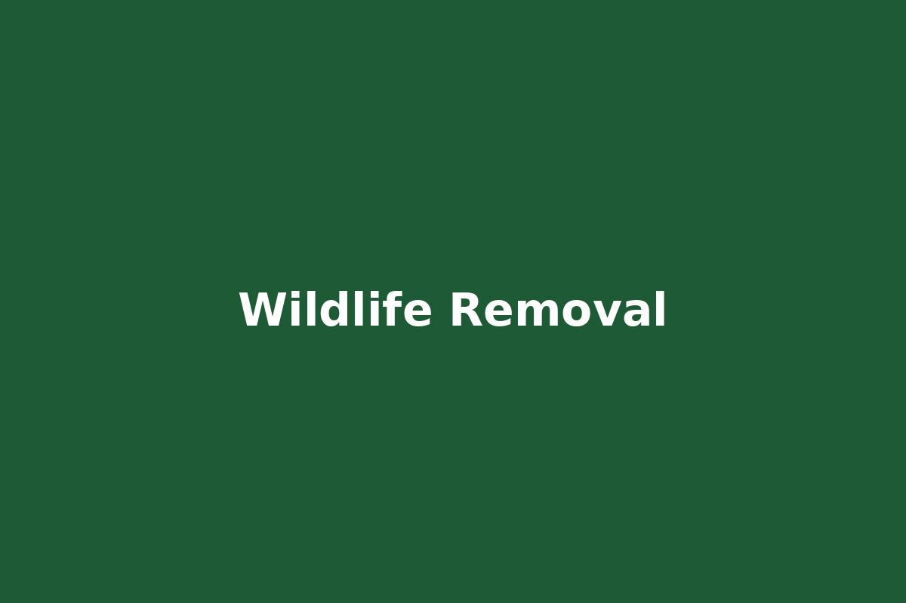

Pest Control Services in St George

Pest Control
General pest control for ants, cockroaches, spiders and household pests.

Termite Control
Inspection and treatment programs to protect homes from termite damage.

Mosquito Control
Seasonal mosquito reduction treatments for residential properties.
Rodent Control
Rat and mouse control including trapping and bait stations.

Wildlife Removal
Removal of nuisance wildlife affecting homes and businesses.